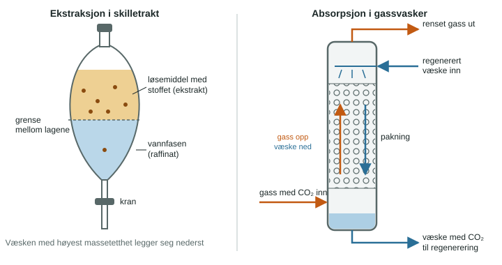

Ekstraksjon og absorpsjon
Noen ganger er det vanskelig eller for dyrt å skille stoffer ved å koke dem. Da kan vi heller bruke en væske som tar opp akkurat det stoffet vi vil ha ut. Slik får vi olje ut av rapsfrø, metaller ut av en løsning og CO2 ut av røykgass.
Felles prinsipp: stoffet flytter over i en annen væske
Ved destillasjon er det varme som skiller stoffene. Ved ekstraksjon og absorpsjon er det noe annet som gjør jobben: Stoffet vi vil ha ut, løser seg bedre i en annen væske. Vi blander de to, stoffet flytter over, og så skiller vi dem igjen.
- Ved ekstraksjon går stoffet fra en væske eller et fast stoff over i et løsemiddel, ofte et annet løsemiddel enn vann.
- Ved absorpsjon går stoffet fra en gass over i en væske.
Hva som løser seg i hva, følger huskeregelen «likt løser likt». Den lærer du på siden Kovalent binding og polaritet i Kjemiske prinsipper.
Etterpå må løsemiddelet eller væsken som oftest skilles fra stoffet, slik at den kan brukes på nytt. Det gjøres ofte med varme, for eksempel destillasjon. Ekstraksjon og absorpsjon regnes derfor ofte med blant de termiske separasjonsmetodene, selv om det er løseligheten og ikke varmen som gjør selve separasjonen.

Ekstraksjon
Væske–væske-ekstraksjon
Her blander vi to væsker som ikke blander seg med hverandre, for eksempel vann og et oljeaktig løsemiddel. De danner to lag, eller to faser. Stoffet vi vil ha ut, løser seg bedre i løsemiddelet enn i vannet.
- Løsemiddelet med stoffet kalles ekstraktet.
- Det som er igjen av den første væsken, kalles raffinatet.
På laben gjøres dette i en skilletrakt. Du heller i begge væskene, rister godt slik at de får stor kontaktflate, og lar trakten stå til lagene har skilt seg. Væsken med høyest massetetthet legger seg nederst og tappes ut gjennom kranen. Noen løsemidler er lettere enn vann og legger seg øverst, for eksempel heksan. Andre er tyngre og legger seg nederst, for eksempel diklormetan. Sjekk massetettheten i sikkerhetsdatabladet, og ta av proppen før du tapper. Det lønner seg å ekstrahere flere ganger med litt løsemiddel hver gang, i stedet for én gang med mye. Da får du ut mer av stoffet med like mye løsemiddel.
I industrien brukes de samme stegene, bare kontinuerlig:
- Blande- og skilletank (mixer-settler): Væskene røres sammen i en tank og renner videre til en ny tank der lagene skiller seg. Flere slike par kobles etter hverandre.
- Ekstraksjonskolonne: Den tunge væsken kommer inn på toppen og synker, mens den lette kommer inn i bunnen og stiger. De møtes i motstrøm, slik som damp og væske i en destillasjonskolonne.
I metallindustrien brukes væske–væske-ekstraksjon blant annet til å skille metaller som nikkel og kobolt fra hverandre i en løsning. Løsemiddelet inneholder et stoff som binder seg til det ene metallet, for eksempel kobolt, og trekker det over i løsemiddelet. Nikkelet blir igjen i vannfasen.
Ekstraksjon fra fast stoff
Stoffet kan også trekkes ut av et fast stoff. Det kalles utluting. Når du lager kaffe, trekker vannet smaksstoffer ut av kaffepulveret. I industrien:
- Olje trekkes ut av knuste rapsfrø og soyabønner med et løsemiddel.
- Sukker trekkes ut av sukkerroer med varmt vann.
- Metaller løses ut av knust malm med syre. Derfor knuses og males malmen først, slik at syren kommer til. Se Knusing og maling.
Etter utlutingen må det faste stoffet skilles fra væsken, for eksempel ved filtrering.
Absorpsjon
Ved absorpsjon vaskes en gass med en væske som tar opp ett av stoffene i gassen. Utstyret kalles en gassvasker eller absorpsjonskolonne. Den ligner på en destillasjonskolonne og har ofte pakning:
- Gassen kommer inn i bunnen og stiger opp.
- Væsken fordeles over pakningen på toppen og renner ned.
- Der de møtes, går stoffet over fra gassen til væsken. Renset gass går ut på toppen.
En gass løser seg best i en kald væske og ved høyt trykk. Derfor kjøles gassen ofte før den går inn i gassvaskeren.
Eksempler fra industrien:
- Svoveldioksid (SO2) i røykgass fra smelteverk vaskes ut med sjøvann.
- Karbondioksid (CO2) kan fanges fra røykgass med en aminløsning. Ved sementfabrikken i Brevik fanges CO2 på denne måten, og den sendes til lagring under havbunnen.
- Saltsyre lages ved at hydrogenklorid-gass absorberes i vann.
En våtvasker som fjerner støv, kan også ta opp gasser som løser seg i vannet. Den lærte du om på siden Syklon og støvfilter.
Regenerering: å få væsken ren igjen
Væsken fra bunnen av gassvaskeren er full av det stoffet den har tatt opp. Den må gjøres ren før den kan brukes igjen. Det kalles regenerering. Væsken varmes opp i en egen kolonne. Ved oppvarming slipper væsken gassen, fordi gass løser seg dårligere i varm væske. I en aminløsning er CO2 i tillegg bundet til aminet, og varmen bryter denne bindingen. Gassen går ut på toppen, og den regenererte væsken kjøles og pumpes tilbake til gassvaskeren. I CO2-fangst er det denne oppvarmingen som bruker mest energi.
Ordene er nesten like, men betyr forskjellige ting:
- Absorpsjon (med b): stoffet løser seg inn i en væske, slik som CO2 i aminløsningen.
- Adsorpsjon (med d): stoffet fester seg på overflaten av et fast stoff, for eksempel på aktivt kull i et filter.
- Løsemidler: Mange løsemidler er brennbare, og dampen kan være helseskadelig. Arbeid i avtrekksskap, hold dem unna varme og gnister, og les sikkerhetsdatabladet.
- Trykk i skilletrakten: Når du rister, kan det bygges opp trykk. Snu trakten med kranen opp, pek den bort fra deg og andre, og åpne kranen for å slippe ut trykket. Gjør dette flere ganger.
- Giftige gasser: Gasser som SO2 og hydrogensulfid (H2S) kan lekke fra en gassvasker. Bruk gassmåler der det kan være slike gasser.
- Etsende væsker: Aminløsninger, lut og syrer brukes ofte i gassvaskere. Bruk vernebriller og hansker.
- Inne i utstyret: En gassvasker eller tank er et lukket rom. Se Lås og merk og lukkede rom.
Test deg selv
1. Hva er forskjellen på ekstraksjon og absorpsjon?
- Ekstraksjon bruker varme, absorpsjon bruker trykk
- Ved absorpsjon går stoffet fra en gass over i en væske. Ved ekstraksjon går det fra en væske eller et fast stoff over i et løsemiddel.
- Det er to ord for det samme
Begge bygger på at stoffet løser seg bedre i en annen væske. Forskjellen er hvor stoffet kommer fra: fra en gass (absorpsjon) eller fra en væske eller et fast stoff (ekstraksjon).
2. Etter en ekstraksjon i skilletrakt har du to lag. Hva kalles løsemiddelet med stoffet du ville ha ut?
- Raffinatet
- Ekstraktet
- Destillatet
Ekstraktet er løsemiddelet med stoffet. Raffinatet er det som er igjen av den første væsken.
3. Du har 60 mL løsemiddel. Hva gir best resultat?
- Å ekstrahere én gang med 60 mL
- Å ekstrahere tre ganger med 20 mL
- Det har ingenting å si
Flere ekstraksjoner med litt løsemiddel hver gang får ut mer av stoffet enn én ekstraksjon med alt løsemiddelet.
4. Hvorfor kjøles gassen ofte før den går inn i en gassvasker?
- For at gassen skal kondensere
- Fordi gassen løser seg bedre i kald væske
- For å unngå at pakningen smelter
Gasser løser seg best i kald væske. Derfor tar væsken opp mer når den er kald, og derfor slipper den gassen igjen når den varmes under regenereringen.
5. Et filter med aktivt kull fanger løsemiddeldamp ved at dampen fester seg på overflaten av kullet. Hva kalles det?
- Absorpsjon
- Adsorpsjon
- Ekstraksjon
Når et stoff fester seg på overflaten av et fast stoff, kalles det adsorpsjon (med d). Absorpsjon betyr at stoffet løser seg inn i en væske.
Ordliste
| Begrep | Forklaring | Engelsk |
|---|---|---|
| ekstraksjon | Separasjon der et stoff går fra en væske eller et fast stoff over i et løsemiddel som stoffet løser seg bedre i. | extraction |
| løsemiddel | Stoffet som det andre stoffet er løst i, oftest vann. | solvent |
| fase | Formen et stoff har: fast stoff, væske eller gass. Når et stoff smelter, fordamper eller kondenserer, skifter det fase. To væsker som ikke blander seg, som olje og vann, er også to faser. | |
| ekstrakt | Løsemiddelet med stoffet som er trukket ut, etter en ekstraksjon. | extract |
| raffinat | Det som er igjen av den første væsken etter at stoffet er trukket ut. | raffinate |
| skilletrakt | En glasstrakt med kran i bunnen, som brukes til å skille to væsker som ikke blander seg. | separatory funnel |
| utluting | Ekstraksjon der et stoff trekkes ut av et fast stoff med en væske, for eksempel metall fra malm med syre. | leaching |
| absorpsjon | Separasjon der et stoff går fra en gass over i en væske og løser seg i den. | absorption |
| gassvasker | En kolonne der en gass vaskes med en væske som tar opp ett av stoffene i gassen. Kalles også absorpsjonskolonne. | scrubber |
| regenerering | Å gjøre en brukt væske eller et brukt filtermateriale rent igjen, slik at det kan brukes på nytt. | regeneration |
| adsorpsjon | Binding av et stoff til overflaten av et fast stoff, for eksempel aktivt kull. | adsorption |
Les mer
- Destillasjonskolonnen: kolonner med motstrøm og pakning.
- Kovalent binding og polaritet i Kjemiske prinsipper: polare og upolare stoffer og «likt løser likt».
- Separasjon i Fysiske prinsipper: massebalanse når en blanding skilles.
Om kildene: Teksten, eksemplene og figurene på denne siden er laget for dette nettstedet. Siden bygger på undervisningsopplegg i kjemiprosess- og laboratoriefag ved Sauda vgs, som er utarbeidet med utgangspunkt i blant annet Kjemien stemmer, Laboranten og åpne nettkilder.